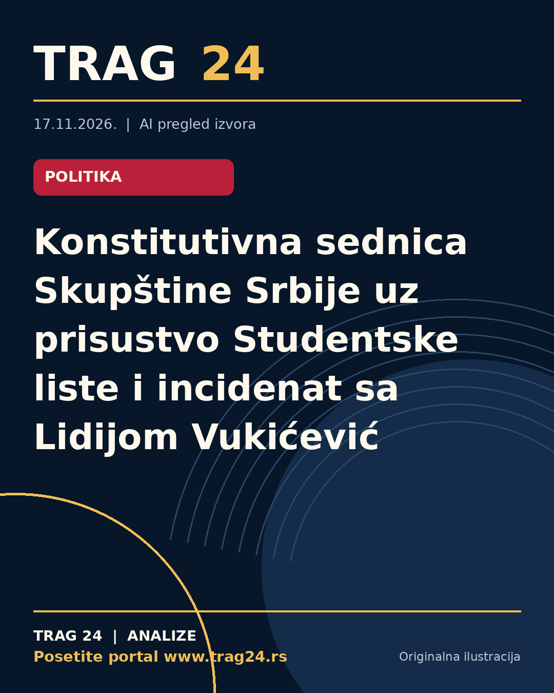

Konstitutivna sednica Skupštine Srbije uz prisustvo Studentske liste i incidenat sa Lidijom Vukićević

ŠTA SE DOGODILO
Dana 1. novembra 2023. godine u 10 časova započela je konstitutivna sednica Narodne skupštine Srbije. Ovo je prvi put nakon 14 godina da Srpska napredna stranka (SNS) prelazi u opoziciju, dok Studentska lista preuzima većinu u parlamentu. Okupljeni građani ispred Skupštine su ispratili buduće poslanike Studentske liste, dok su se u isto vreme odvijali incidenti vezani za pripadnike SNS-a.
HRONOLOGIJA
Poslanici su pristizali u Skupštinu gde su obavljali proceduru legitimisanja i dobijanja poslaničkih legitimacija. Skupština je konstituisana intoniranjem himne "Bože pravde". Na ulazu u Narodnu skupštinu, kandidati Studentske liste su ispraćeni aplauzima i pesmom profesora Aleksandra Čupića, dok su pristalice i studenti bodrili svoje predstavnike. Istovremeno, u toku je bilo i verbalno i fizičko negodovanje okupljenih građana prema članovima SNS-a, pa je jednom od njih, glumici Lidiji Vukićević, jutros poliven jogurtom.
ŠTA NAVODE IZVORI
Prema izveštajima medija Nova.rs i Blica, Studentska lista je zvanično preuzela većinu u Skupštini, a osim aplauza, njihovi kandidati su dobijali i poruke podrške od građana. Sa druge strane, povezane s SNS prethodile su verbalni i fizički napadi, što uključuje incident sa Lidijom Vukićević. Takođe, nije jasno da li će na današnjoj sednici biti izvršeni svi planirani izbori funkiconera zbog izraženih sumnji u obe liste. Za sada se dnevni red sastoji od šest tačaka, među kojima su potvrda mandata, izbor predsednika i potpredsednika Skupštine, te izbora članova radnih tela.
ŠTA JE POTVRĐENO
Konstitutivna sednica počela je u zakazano vreme, sa prisustvom velikog broja građana i novinara. Potvrđeni su dolazak i legitimisanje poslanika Studentske liste i SNS. Incident sa polivanjem jogurtom na glumicu i poslanicu Lidiju Vukićević dogodio se ispred Skupštine, a gradska okupljanja su pratila izražena osećanja podrške Studentskoj listi i negodovanja prema SNS-u.
ŠTA NIJE POTVRĐENO
Nije potvrđeno da li će tokom današnje sednice biti izabrani svi predviđeni funkcioneri i kompletiran sastav rukovodstva parlamenta, jer u oba tabora postoje određena neslaganja i sumnje. Takođe, detalji o drugim eventualnim incidentima ili tok sednice u daljem delu ostaju nepoznati.
ŠTA OSTАJE OTVORENO: Ostaje nejasno kako će se odvijati rad nove parlamentarne većine i kako će se razrešiti situacija oko izbora novih funkcionera, s obzirom na izražene sumnje i tenzije. Takođe je otvoreno pitanje da li će se agresivni incidenti i dalje pojavljivati tokom sednica i kako će se ta situacija dalje odvijati.
Izvori
- https://nova.rs/vesti/politika/blog-uzivo-konstitutivna-sednica-skupstine-srbije/
- https://www.blic.rs/vesti/politika/skupstina-srbije-prenos-uzivo-studentska-lista-i-sns-prvi-put-oci-u-oci/jzw7gwg
Ova analiza je pripremljena uz pomoć veštačke inteligencije na osnovu javno dostupnih izvora. Navodi izvora nisu nužno nezavisno potvrđeni.